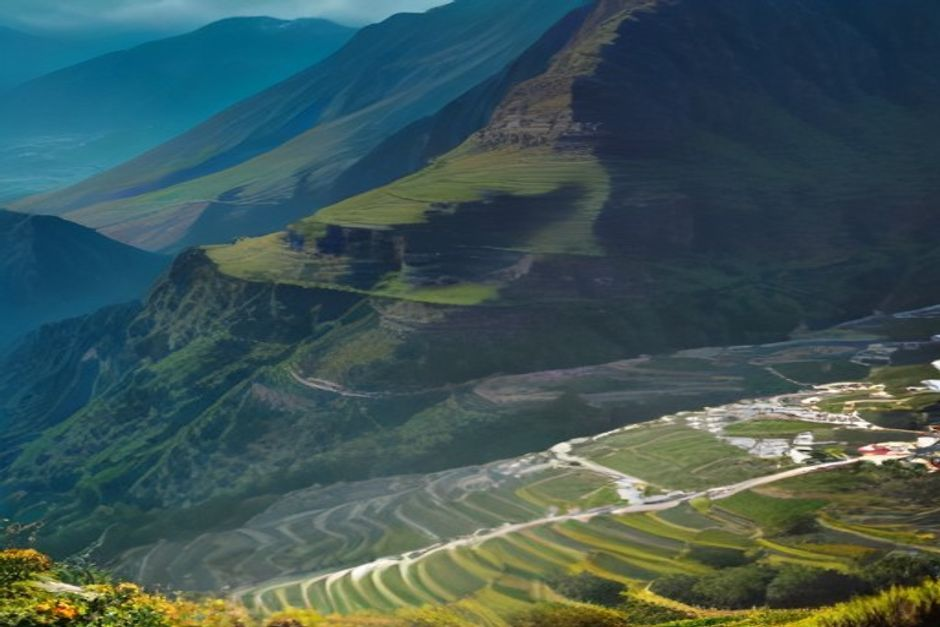

Vous avez vu des photos de la « vallée des nonnes » à Madère : un village minuscule au fond d'un cirque, cerné de pics si raides qu'on se demande comment on y arrive. Curral das Freiras est bien réel, il se trouve à une trentaine de minutes de Funchal, et il vaut le détour. Voici ce qu'il faut savoir avant d'y aller : où il se situe, à quelle altitude, par quelle route, que voir et que manger.
Curral das Freiras, c'est quoi exactement ?
Curral das Freiras (on écrit parfois, à tort, « Curral des Freiras ») est un village et une paroisse nichés dans un ancien cratère volcanique, au cœur montagneux de l'île. Vous le trouverez aussi sous le nom de « vallée des nonnes », traduction à peu près fidèle du portugais.
Le village se trouve à environ 461 mètres d'altitude, tout au fond de la caldeira. Autour de lui, les parois montent presque à la verticale, avec certains des plus hauts sommets de Madère. Pendant des siècles, on n'y entrait qu'à pied ou à dos de mulet, par des sentiers étroits.
Il n'y a pas de monument à cocher ici. Ce qu'on vient voir, c'est le décor : des terrasses vertes, des toits groupés au fond d'un entonnoir de roche, et le calme qui va avec.

Pourquoi l'appelle-t-on la vallée des nonnes ?
Parce que des religieuses s'y sont réfugiées. En 1566, des corsaires français attaquent Funchal. Les nonnes du couvent Santa Clara fuient vers l'intérieur de l'île et se cachent dans cette vallée fermée de tous côtés, presque impossible à trouver.
Le nom, Curral das Freiras, signifie « l'enclos des nonnes ». Plus de 450 ans après, il n'a pas changé, et c'est la première anecdote que les habitants vous raconteront.
Altitude : 461 m pour le village, 1 095 m pour le belvédère
La question revient souvent, et il y a deux chiffres à retenir. Le village de Curral das Freiras est à environ 461 mètres. Le belvédère d'Eira do Serrado, lui, est à environ 1 095 mètres : c'est le point de vue qui plonge sur le village.
Cela fait plus de 600 mètres de différence. Vous le sentirez dans les oreilles en voiture, et dans les jambes si vous descendez à pied. Pensez aussi à une petite veste : en haut, l'air est plus frais que sur la côte de Funchal.
Aller de Funchal à Curral das Freiras
Le village se situe à environ 15 km au nord de Funchal. En voiture, comptez 20 à 30 minutes. Cela n'a pas toujours été aussi simple : avant 2004, il fallait une longue route de montagne collée à la falaise. Depuis, un tunnel routier de 2,4 km traverse la paroi du cratère et a tout changé.
- En voiture de location ou en taxi : c'est le plus simple, et cela permet de s'arrêter à Eira do Serrado en route.
- En bus : la ligne 81 de Rodoeste part de Funchal. Prévoyez plutôt 35 minutes de trajet.
Si vous n'aimez pas conduire sur les routes de montagne, le tunnel est une bonne nouvelle : la partie la plus impressionnante du trajet est désormais derrière vous avant même d'arriver.
Le belvédère d'Eira do Serrado : l'arrêt à ne pas manquer
Un panneau indique la route qui monte au miradouro d'Eira do Serrado, au-dessus du cratère. Depuis le parking, une petite marche facile mène à une plateforme d'où l'on regarde droit vers le village, tout en bas, et vers les pics qui l'enferment.
C'est la vue des cartes postales. La plupart des visiteurs s'y arrêtent avant ou après être descendus au village : vu d'en haut puis vu du fond, le lieu n'a plus du tout la même allure. Faites les deux si vous le pouvez.
Descendre à pied dans la vallée
Vous aimez marcher ? Deux options existent.
- La Vereda das Voltas : un sentier en lacets qui descend d'Eira do Serrado jusqu'au village. Vous faites à pied la descente que les voitures font par la route, en plus lentement et de beaucoup plus près.
- Le PR12, Caminho Real da Encumeada : un vrai sentier de 12,5 km, entre environ 830 et 1 323 mètres, côté Boca da Corrida. Il longe les montagnes qui séparent Curral das Freiras du col de l'Encumeada. C'est une journée de randonnée, pas une balade de détente, avec des vues sur la vallée que la route ne donne pas.
Où manger : châtaignes et truite
Le climat frais de la vallée convient aux châtaigniers bien mieux que la côte, et la cuisine locale en a fait sa spécialité : soupe de châtaignes, gâteau de châtaignes, et licor de castanha, la liqueur de châtaigne vendue en petites bouteilles dans les boutiques et les cafés du village.
L'autre plat que l'on vous conseillera est la truite (truta), élevée dans les eaux froides de la vallée. On est loin de l'espetada et de la poncha du littoral : si vous aimez bien manger, c'est une raison suffisante pour venir.
Quand y aller : la fête de la châtaigne
Curral das Freiras reste calme presque toute l'année. L'exception, c'est la Festa da Castanha, qui dure deux jours, à la toute fin octobre et au début de novembre : les 31 octobre et 1er novembre ces dernières années. Elle est organisée par la Casa do Povo de la paroisse.
Des stands vendent des châtaignes grillées au feu, de la liqueur de châtaigne, du gâteau de châtaignes et de la ginjinha. C'est l'un des rares moments où le village se remplit vraiment. Si vous êtes à Madère à cette date, cela vaut la peine de caler votre visite dessus ; sinon, comptez sur un village tranquille.
Combien de temps prévoir ?
Une demi-journée suffit. Entre la route, l'arrêt à Eira do Serrado, un tour dans le village et le déjeuner, la plupart des visiteurs comptent trois à quatre heures depuis Funchal, porte à porte. Matin ou après-midi, au choix.
Sur le chemin du retour, on peut enchaîner avec d'autres étapes en altitude, comme le téléphérique de Monte ou le Pico dos Barcelos, sans grand détour.
Cratère le matin, mer un autre jour
Les deux ne se combinent pas dans la même matinée : Curral das Freiras est une excursion de montagne, et la côte est un autre monde. Le plus simple est de consacrer une demi-journée au cratère, puis un autre jour à la mer.
Côté mer, Chifbay propose des sorties en bateau privé depuis la Marina do Funchal, ponton C : le bateau est à votre groupe seul, jusqu'à 5 personnes. La sortie en journée (départ à 10 h ou 14 h) passe par Câmara de Lobos et Cabo Girão, avec baignade et paddle à Fajã dos Padres. La sortie coucher de soleil part 1 h 15 avant le coucher du soleil. Les tarifs sont ceux du bateau entier, pas par personne ; pour l'ensemble des formules, voyez notre sélection des sorties en bateau à Madère.
C'est ce contraste, entre le fond du cratère à 461 mètres et le pied de la falaise de Cabo Girão, qui rend quelques jours sur l'île si variés.
La plupart de Madère vous montre l'océan. Curral das Freiras vous montre l'île quand on lui tourne le dos.
Ce n'est pas un arrêt de cinq minutes, et ce n'est sur la route de rien d'autre. Mais un village-cratère qui a caché des nonnes face aux pirates, avec de la liqueur de châtaigne qui vous attend en bas, mérite largement sa demi-journée.